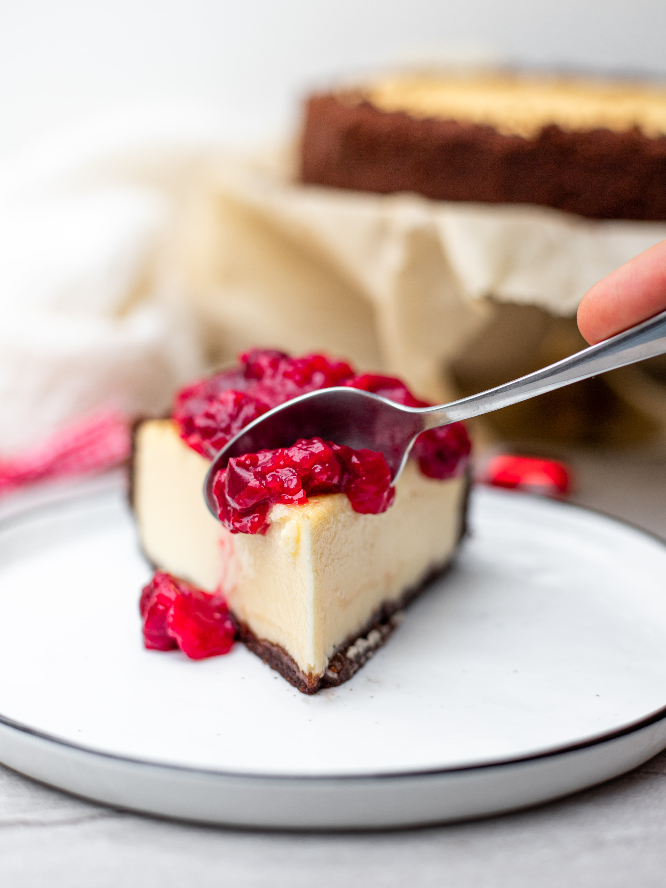

You can't buy happiness but you can buy cake and that's kind of the same thing
What about Cheesecake?
The first "cheese cake" may have been created on the Greek island of Samos. Physical anthropologists excavated cheese molds there which were dated circa 2,000 B.C. Cheese and cheese products had most likely been around for thousands of years before this, but earlier than this goes into prehistory (that period in human history before the invention of writing) so we will never really know. In Greece, cheesecake was considered to be a good source of energy, and there is evidence that it was served to athletes during the first Olympic games in 776 B.C. Greek brides and grooms were also known to use cheesecake as a wedding cake. The simple ingredients of flour, wheat, honey and cheese were formed into a cake and baked - a far cry from the more complicated recipes available today! The writer Athenaeus is credited for writing the first Greek cheesecake recipe in 230 A.D. (By this time, the Greeks had been serving cheesecake for over 2,000 years but this is the oldest known surviving Greek recipe!) It was also pretty basic - pound the cheese until it is smooth and pasty - mix the pounded cheese in a brass pan with honey and spring wheat flour - heat the cheese cake "in one mass" - allow to cool then serve. When the Romans conquered Greece, the cheesecake recipe was just one spoil of war. They modified it including crushed cheese and eggs. These ingredients were baked under a hot brick and it was served warm. Occasionally, the Romans would put the cheese filling in a pastry. The Romans called their cheese cake "libuma" and they served it on special occasions. Marcus Cato, a Roman politician in the first century B.C., is credited as recording the oldest known Roman cheesecake recipe. As the Romans expanded their empire, they brought cheesecake recipes to the Europeans. Great Britain and Eastern Europe began experimenting with ways to put their own unique spin on cheesecake. In each country of Europe, the recipes started taking on different cultural shapes, using ingredients native to each region. In 1545, the first cookbook was printed.
